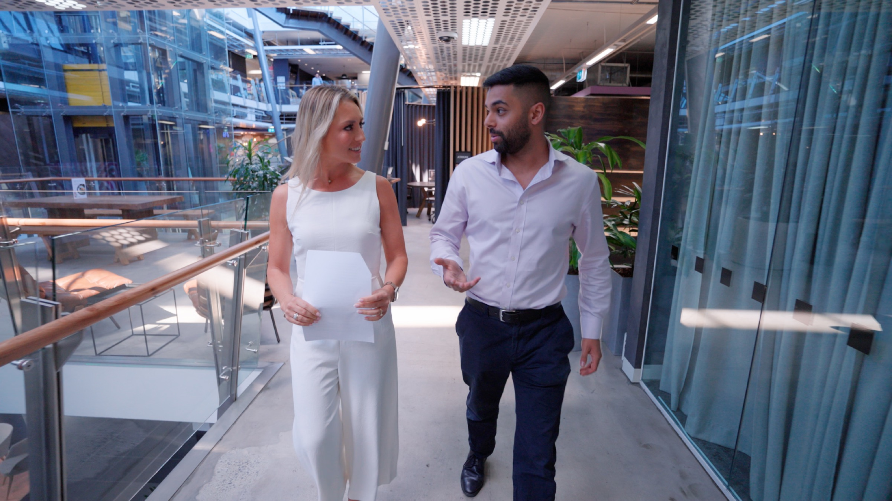

Purpose Productions is a small studio with big standards. Run by James Shadrach with a curated network of editors, directors and crew — pulled in as projects need them.

James founded Purpose Productions in 2017 after a decade producing video and audio work across agencies in Melbourne and Sydney. The studio he kept wishing for didn't exist — so he built one.
What started as a one-person operation has grown into a tight crew built around a single principle: make professional content easy for people who already have a job.
James is the producer on every project. He's in the room for every shoot. You will not be passed to an account manager.
Custom-built on level five of 111 Cecil Street, inside the Creative Cubes complex. Acoustically treated. Three calibrated cameras. Lighting designed for executive portraits.
Most podcast studios are converted offices with a microphone in the corner. Ours was designed from the floor up — sound treatment, sightlines, wardrobe area, makeup mirror, plenty of natural light. Guests notice. Most ask to come back.
"They have great ideas and they spend the time getting to know our business and vision — and the results show it."
Nick Mann
Founder · Polaris Lawyers
Fifteen minutes on the phone. Tell us what you're working on and we'll tell you how we'd approach it.